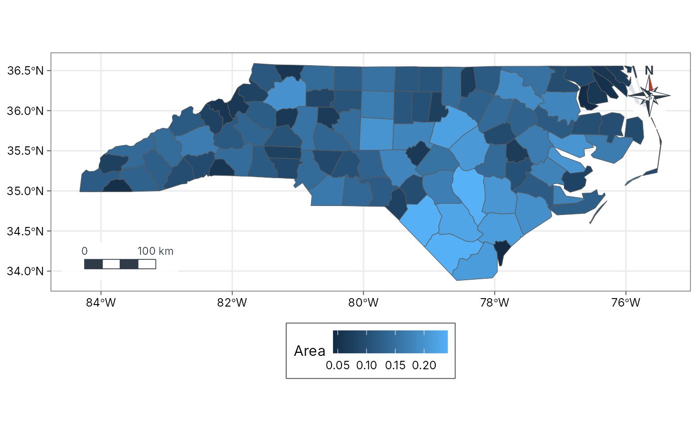
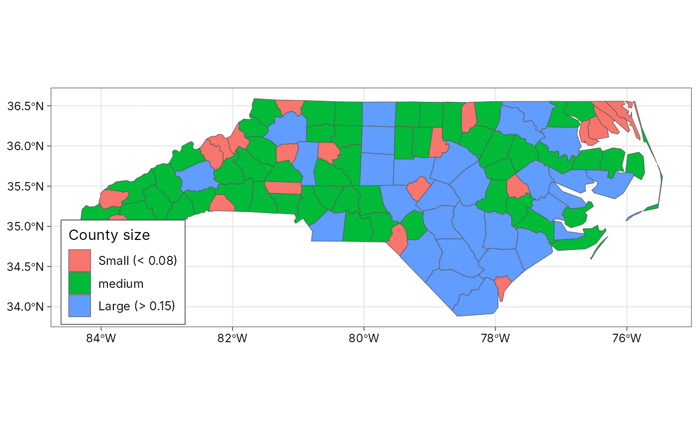
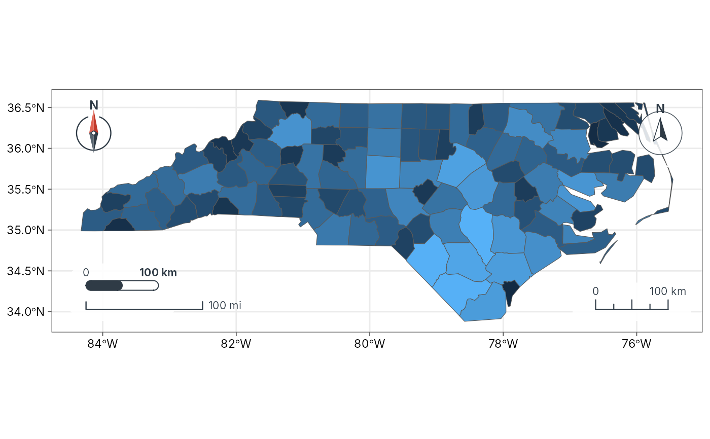

Scale bars, north arrows and legends in GeoSpaX styles
map-furniture.RdMap furniture you can add to any ggplot map drawn with
ggplot2::coord_sf() (every tidymapr map uses it), in the same styles as
the GeoSpaX desktop app:
annotation_scale_bar(): a scale bar whose length is measured on the ground (great-circle metres across the panel) when the map is drawn, so it is right for longitude/latitude and projected maps and in every facet. Styles:"pill"(default; rounded bar, half dark),"checker"(alternating blocks),"line"(a bracket with the distance above) and"ruler"(ticks at 0, 1/4, 1/2, 3/4 and 1). Units:"metric","imperial"or"both"(a second bar in miles).annotation_north_arrow(): styles"needle"(default; two-tone needle in a ring),"compass","rose"(eight-point compass rose) and"minimal".map_legend(): puts the legend"right"(default),"bottom","inside"a corner of the map, or removes it ("none"), and customises it as in GeoSpaX: title, renamed entries (labels), hidden legends (hide), frame, text, title and key sizes, columns, direction and reversed order.
plot_sites(), plot_geo(), plot_choropleth() and plot_bubble()
take the same style names through their scale_bar, north_arrow and
legend arguments.
Usage
annotation_scale_bar(
style = c("pill", "checker", "line", "ruler"),
location = c("bl", "br", "tl", "tr"),
units = c("metric", "imperial", "both"),
length = NULL,
pad = 3,
text_size = 8,
data = NULL
)
annotation_north_arrow(
style = c("needle", "compass", "rose", "minimal"),
location = c("tr", "tl", "br", "bl"),
size = 16,
pad = 3,
data = NULL
)
map_legend(
position = c("right", "bottom", "inside", "none"),
corner = c("tr", "tl", "br", "bl"),
title = NULL,
labels = NULL,
hide = NULL,
frame = TRUE,
text_size = NULL,
title_size = NULL,
key_size = NULL,
ncol = NULL,
direction = NULL,
reverse = FALSE
)Arguments
- style
Furniture style (see Description).
- location
Corner:
"bl"(bottom left),"br","tl"or"tr".- units
Scale bar units:
"metric","imperial"or"both".- length
Optional fixed bar length, in metres (or miles when
units = "imperial"). WhenNULL, a round length of about a fifth of the map width.- pad
Distance from the panel edge, in millimetres.
- text_size
Text size in points: scale bar labels, or legend entries in
map_legend().- data
Optional one-row data frame holding facet columns, to draw the furniture in one facet only.
- size
North arrow size in millimetres.
- position
Legend position:
"right","bottom","inside"or"none".- corner
For
position = "inside", the corner ("tr","tl","br"or"bl").- title
Legend title.
NULLkeeps the titles the plot already has.- labels
Rename legend entries: a named character vector,
c(old = "new"), applied to every discrete legend (colour, fill, shape) that shows those entries.- hide
Aesthetics whose legend to hide, for example
"size".- frame
Draw a white box with a thin border around the legend?
- title_size
Legend title size in points.
- key_size
Size of the legend keys in millimetres.
- ncol
Number of columns of legend entries.
- direction
"vertical"or"horizontal"; by default horizontal at the bottom and vertical elsewhere.- reverse
Reverse the order of legend entries?
Examples
library(ggplot2)
# North Carolina counties (real data shipped with sf)
nc <- sf::st_read(system.file("shape/nc.shp", package = "sf"), quiet = TRUE)
base <- ggplot(nc) + geom_sf(aes(fill = AREA)) + theme_tidymapr(grid = "none")
base +
annotation_scale_bar(style = "checker", location = "bl") +
annotation_north_arrow(style = "rose", location = "tr") +
map_legend("bottom", title = "Area")

# Customised legend: renamed entries, two columns, larger keys
nc$size_class <- cut(nc$AREA, c(0, 0.08, 0.15, 0.25),
labels = c("small", "medium", "large")
)
ggplot(nc) +
geom_sf(aes(fill = size_class)) +
theme_tidymapr(grid = "none") +
map_legend("inside",
corner = "bl", title = "County size",
labels = c(small = "Small (< 0.08)", large = "Large (> 0.15)"),
ncol = 1, key_size = 6, text_size = 9
)

# Every style at once
base +
annotation_scale_bar(style = "pill", location = "bl", units = "both") +
annotation_scale_bar(style = "ruler", location = "br") +
annotation_north_arrow(style = "needle", location = "tl") +
annotation_north_arrow(style = "compass", location = "tr") +
map_legend("none")
